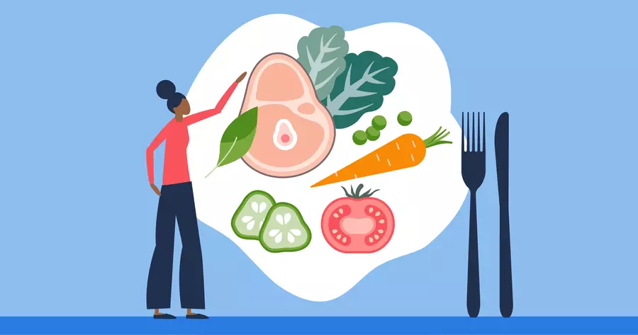
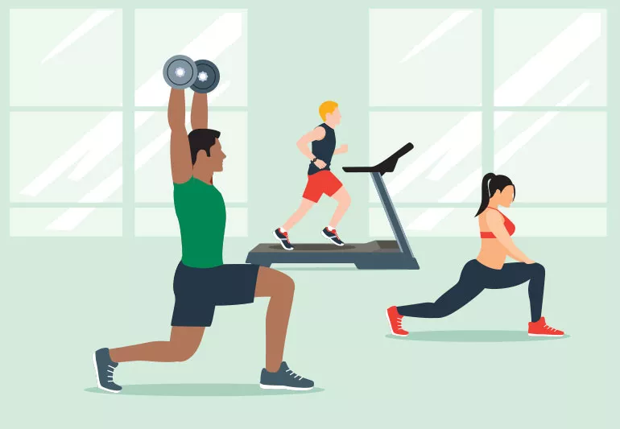
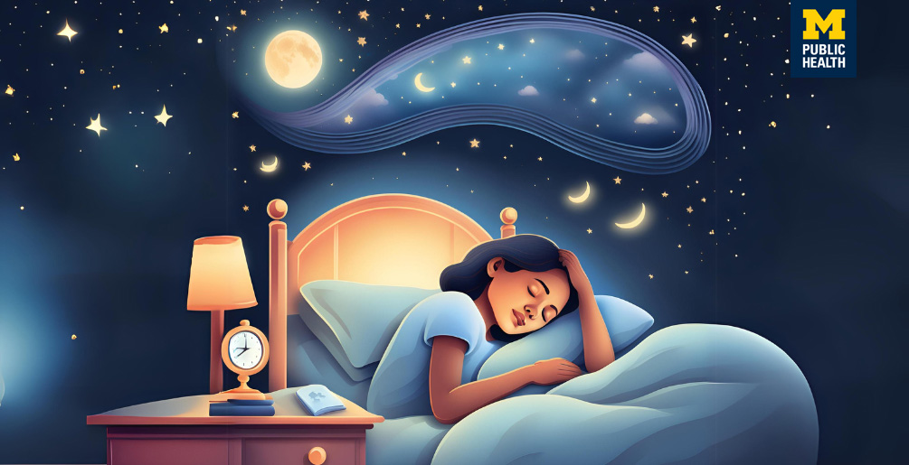

What you put into your body directly impacts your health since our bodies derive energy and nutrients from our food. A balanced diet ensures you get all essential vitamins, minerals, and other nutrients crucial for optimal function. Adding more plant-based foods to your diet is a great place to start. Fruits and vegetables can help maintain healthy cholesterol and blood pressure levels, reduce the risk of chronic conditions, and provide essential nutrients. Focus on whole foods: colorful vegetables, lean proteins, whole grains, and healthy fats. Remember to moderate processed foods, alcohol, sugar, and excessive caffeine. Practicing mindful eating and prioritizing healthy meal preparation can positively affect overall wellbeing. 💙 Check out our Mindful Eating masterclass if you want to offer mindfulness a seat at the table.
We all know exercise is awesome for health, from fighting obesity to boosting energy. But most of us struggle to keep up with the daily recommendations. It can be hard to fit exercise into a busy schedule, especially when juggling work, family, school, and chores. Motivating yourself to exercise when you’re tired and stressed can also be hard. So why do it? Regular physical activity is one of the most important things you can do for your health. Being physically active can improve your brain health, help manage weight, reduce the risk of disease, strengthen bones and muscles, and improve your ability to do everyday activities. -Centers for Disease Control and Prevention Exercise can also boost energy and mood. A great place to start is with a walk. Regular walking is a simple yet effective habit with numerous benefits for physical and mental health. Plus, walking provides an opportunity for relaxation, letting go of stress, and clearing your mind. 💙 On days where you can’t make it to the gym, or out onto the hiking trails, try some gentle movement at home. The Daily Move with Mel Mah is a great practice to incorporate into your day to day when you can’t leave the house.
Quality sleep is as important to our health as diet and exercise. Sleep is our body's repair mechanism. It rejuvenates the mind, repairs cells, and revitalizes the body's systems. Not to mention how much happier we feel when we’ve had a good sleep! Aim for 7-9 hours of quality sleep. To rest reasier, create a serene sleeping environment. In an ideal world you want it dark, cool, and quiet. Consider setting a sleep schedule and sticking to it, even on weekends. 💙 When it’s time to settle in for the evening try Unwind into Sleep with Chibs Okereke.
 helathy lifestyle diet exercise sleep| training activity | calories |
|---|---|
| box | 651 |
| walking | 200 |
| Swimming | 300 |